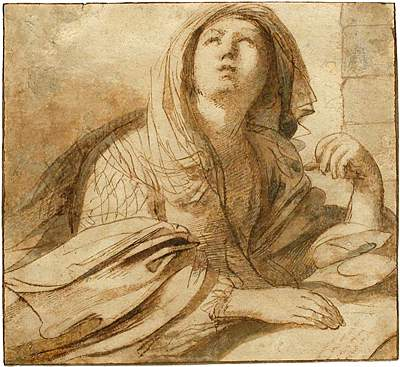

the room set apart long ago for an Empress's confinement
where the stone oxen and the lions stand
in the form of a perfect square from floor to ceiling
the latter ending in a pyramid
with white spots like sand sprinkled over
eventually they were lost
the power to preside over, and thus to dominate,
to take care of the temples
also they oversaw the organization of festivals and games
abandoned and became free to run during all years
who were in charge of striking and casting bronze
easily explained by mental illness
served as a stepping stone for the sons of senators to begin their own public careers in the cursus honorum
 prophetic priestess presiding over the Apollonian Oracle
vigorous naturalism contrasts with the classical equilibrium
noted for luminosity and lively style
assisted by an enhanced perception of light and shade
Kick over the chain. Why the paranoia? Where was this all leading?
often tumultuous in conception
shares the same pair of shepherds
the deepest part
He was also a prolific draftsman.
He returns to Lombardy to complete altarpieces.
works are eccentric depictions of religious ecstasies; the saints appear liquefied and contorted by piety. He often caps them with exuberant, oriental turbans.
resented this loss, and worked for decades with the goal of regaining that loss.
He eventually finds at least philosophical consolation in a mysterious stranger
Stillborn son
died giving birth to her last child
first ruler of the Kingdom of Jerusalem, refused the title of king choosing instead the title Advocatus Sancti Sepulchri
Though widely and erroneously reported as having been burned
You have to be taken apart. Monsters like you were supposed to be burnt
I will never, ever, be your slave.
Still trying to piece together the fragments, either fights in a war during this period, or at least intensely uses its imagery, which leads him to a "Centre of Indifference", and on reflection of all the ancient villages and forces of history around him, ultimately comes upon the affirmation of all life in "The Everlasting Yes".
a victim to timidity and preyed on by an uncomfortable sense of mere physical cold
so universal appeared the spiritual forces at work in society at that time that it was impossible to say where they were and where they were not, and hence the name, "Don't-know-where"
These digressive methods reflect his inability to simply explain each event as it occurs, as he frequently interrupts these events with commentary about how the reader should understand and follow each event.
the marbled and blank pages
rearranged what he took to make it more humorous, or more sentimental, or more rhythmical
old statesmen who realized that they no longer meet the standards of romanitas for failing to perform their public function with dignity and gravitas committed suicide or simply refused taking food.
The main use is the physical presence of a person,
the prospect of the physical arrival of that person, especially the visit of a royal or official personage
Observance, perception, surveillance
is this a complete person?
The man behind the trees
drawn on the machine
a gangly horror
standing in her place
normal in their colors
while smoke fills the house
epyphanie, ἐπιφάνεια, manifestation, striking appearance
horrible pink person
I appear, display
I can go anywhere in the world
An illuminating realization or discovery, often resulting in a feeling of wonder.
A manifestation of a deity to a person.
serving as a spiritual eidolon for emulation or worship.
splitting the human experience of reality into sacred and profane space and time
extra Ecclesiam nulla salus
Does it therefore follow that anyone who is not visibly within the Church is necessarily damned?
"How many sheep there are without, how many wolves within!"
necessarily damned in case of inculpable ignorance
frequently repeated over the centuries in different terms by the ordinary magisterium